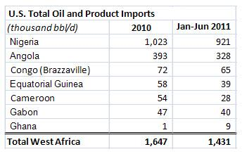
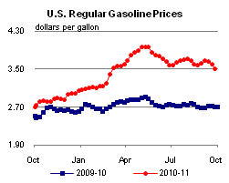
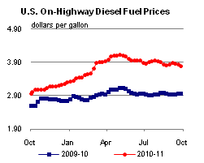
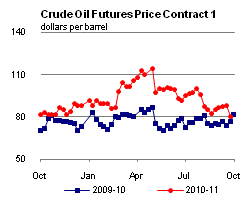
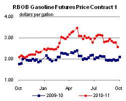
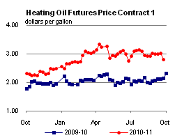
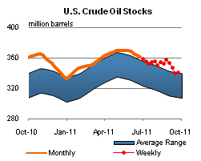
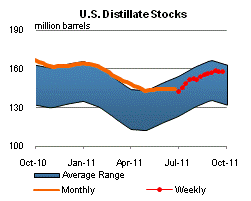
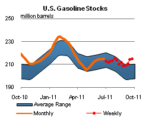
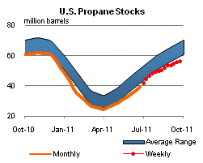

Released: September 28, 2011
Next Release: October 5, 2011
Positive Oil Supply Developments in West Africa
With the recent focus on supply disruptions and the potential for continuing unrest in North Africa and the Middle East, several positive developments in oil supply from West Africa may have escaped attention. Arresting earlier declines, the region's top two producers, Nigeria and Angola, have each managed relatively robust production and export performances, helping offset shortfalls in supply from Libya, Syria, and Yemen. Both countries offer the promise of further, significant capacity additions in the short- to medium-term, although, in Nigeria, some major challenges remain. The region also includes a number of emerging suppliers, including Ghana, which has experienced a rapid ramp up in output from less than 10,000 barrels per day (bbl/d) last year to over 90,000 bbl/d by mid-2011.
The importance of West African crude streams to the world oil market reflects their quality as well as their volume. Nigeria's light, sweet (low-sulfur) crude grades, with their high gasoline yields, came in particularly high demand when civil war broke out in Libya earlier this year, as they offered relatively close substitutes for Libyan oil. Ordinarily, according to Lloyd's List Intelligence APEX database, the United States takes the lion's share of Nigeria's crude exports (43 percent in 2010), followed by India (14 percent) and Brazil (8 percent), while China attracts the bulk of Angolan exports. In 2010, the U.S. accounted for only 23 percent of Angolan exports, far behind China (45 percent), with India and Taiwan together accounting for another 15 percent.
Collectively, West Africa remains an important source of U.S. oil supply, accounting for roughly 14 percent of total U.S. oil imports last year, even as increased volumes were being shipped to Asian markets. West Africa was the third largest supply region for U.S. imports in 2010, trailing behind the Persian Gulf and well behind the Americas, including Canada, which is by far our largest source of imports. Nigeria and Angola, the dominant West African suppliers which are both OPEC members, together shipped a combined 1.4 million bbl/d of oil to the United States in 2010, placing them among the top ten sources of U.S. oil imports. Non-OPEC West African producers accounted for another 230,000 bbl/d of U.S. oil imports.

Since its 2005 peak, Nigeria's oil production has faced two major problems: politically motivated attacks by local groups seeking a share of the oil wealth and protesting against environmental damage caused by oil companies, and economically-driven oil theft. This "illegal bunkering", a commonly used euphemism for pilfering oil from pipelines, often causes pollution, pipeline damage, and production shut-ins. Annual average production slipped to less than 2.2 million bbl/d in 2008, from 2.6 million bbl/d in 2005 (including crude oil and lease condensate). The U.S. Energy Information Administration (EIA) estimates that direct attacks on Nigeria's oil infrastructure, pipeline leaks, and explosions caused by illegal bunkering have, at times, caused crude production to range between 1.7 million bbl/d to 2.1 million bbl/d, well below the nameplate capacity of about 2.9 million bbl/d.
Under an amnesty reached in August 2009, however, many Niger Delta militants handed over their weapons to the government in exchange for cash payments and training opportunities. This amnesty has led to decreased attacks and some companies have been able to repair damaged oil infrastructure. In April 2011, Goodluck Jonathan, a southerner from an oil state who had risen from Vice-President to President of Nigeria upon the death in office his predecessor, was elected to a full term as President, which may help to soothe discontent and foster a sense of empowerment among disenfranchised communities of the oil-rich Niger Delta. While political violence has not disappeared, its focus appears to have shifted to the northern provinces, leaving oil facilities relatively unscathed.
In 2010, Nigeria's total oil production reached 2.5 million bbl/d, making it the largest oil producer in Africa. Crude oil production averaged about 2.1 million bbl/d for the year. Recent offshore oil developments combined with the restart of some shut-in onshore production have boosted crude production to nearly 2.2 million bbl/d in July 2011. Planned upstream developments could further increase Nigerian oil production in the short- to medium-term. On paper, projects announced by international oil companies (IOCs) could add more than 1.2 million bbl/d to the country's production capacity by 2016, though delays are virtually certain.
While political violence has abated, illegal bunkering and other criminal attacks have persisted, due in part to weak economic development and the lack of progress in job creation. In addition, whether and when planned production startups materialize will depend on the progress of a far-reaching reform of the energy sector, the Petroleum Industry Bill (PIB), first introduced in 2009. While the bill generally aims to boost government revenue by making the Nigerian oil sector more efficient, some of its provisions seek to renegotiate contracts with IOCs and raise taxes and royalties. Although parts of the PIB have recently been made into law, the Bill in its entirety continues to be debated by the National Assembly. This ongoing debate has already caused substantial delays in investments in oil exploration and project development, and has also affected the natural gas sector.
In Angola, several startups look set to significantly raise short-term production. In 2010, Angola produced an estimated 1.9 million bbl/d of crude oil, up from less than 500,000 bbl/d in the early 1990s. In the first half of 2011, however, production decreased to an average of just below 1.7 million bbl/d, due mostly to technical problems in the Saxi-Batuque and Greater Plutonio projects. In the second half of 2011, production is expected to return to earlier peaks as these problems are resolved, adding back about 150,000 bbl/d. Additional increases are expected from the recent startup of the 220,000 bbl/d Pazflor project and the upcoming 150,000 bbl/d PSVM project in early 2012. For a more comprehensive list of upstream oil projects in Angola, please see EIA's Country Analysis Brief.
Gasoline and diesel fuel prices fall for three consecutive weeks
The U.S. average retail price of regular gasoline fell for the third straight week, declining just over nine cents to reach $3.51 per gallon. The average price is $0.82 per gallon higher than last year at this time. Leading the move down, the Midwest price plummeted over 14 cents from last week's average. The Gulf Coast price, the lowest in the country, is $3.31 per gallon after shedding a dime on the week, while the East Coast price was almost eight cents lower. The average in the Rocky Mountains fell two and a half cents while the West Coast still has the highest price at $3.83 per gallon after declining almost three cents.
The national average diesel fuel price fell over four cents to $3.79 per gallon. The diesel price is $0.84 per gallon higher than last year at this time. Diesel averages were down across all the regions, with the biggest decrease coming in the Midwest where diesel prices dropped more than six cents. The Gulf Coast has the lowest-priced diesel fuel at $3.73 per gallon, down about four cents from last week. The East Coast diesel price shed a nickel on the week. Moving west, the Rocky Mountain price was down two and a half cents, while the West Coast diesel average fell two cents but remained the most expensive among the major regions at $3.96 per gallon.
Propane stocks grow but still below normal
Although total U.S. inventories of propane moved 0.9 million barrels higher last week to end at 56.2 million barrels, stocks were 7.2 million barrels less than last year's level and tracked below the average range for this time of year. The East Coast and Gulf Coast regions both gained 0.3 million barrels of new propane stocks. The Midwest region was up by 0.2 million barrels and the Rocky Mountain/West Coast region increased slightly. Propylene non-fuel use inventories represented 5.7 percent of total propane inventories.
Text from the previous editions of This Week In Petroleum is accessible through a link at the top right-hand corner of this page.
|  |  | ||||||
| Retail Data | Changes From | Retail Data | Changes From | ||||
| 09/26/11 | Week | Year | 09/26/11 | Week | Year | ||
| Gasoline | 3.509 | Diesel Fuel | 3.786 | ||||
|  |  | ||||||||||||||||||||||||||
|
 | ||||||||||||||||||||||||||
| *Note: Crude Oil Price in Dollars per Barrel. | |||||||||||||||||||||||||||
|  |  | ||||||
|  |  | ||||||
| Stocks Data | Changes From | Stocks Data | Changes From | ||||
| 09/23/11 | Week | Year | 09/23/11 | Week | Year | ||
| Crude Oil | 341.0 | Distillate | 157.7 | ||||
| Gasoline | 214.9 | Propane | 56.226 | ||||